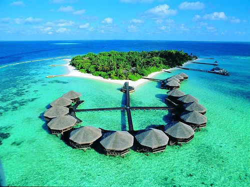

Pantai Ora
Pantai Ora di Maluku Tengah menawarkan pasir putih bersih dan air laut sebening kristal. Tempat ini sering disebut sebagai Maladewa-nya Indonesia.
Pantai Ora di Maluku Tengah menawarkan pasir putih bersih dan air laut sebening kristal. Tempat ini sering disebut sebagai Maladewa-nya Indonesia.